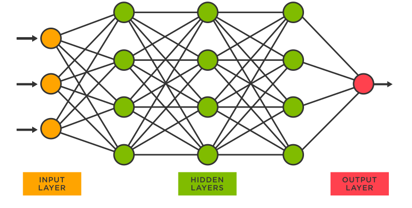

ML models
The ML models we used and why.
Decision Tree and Random Forests -A decision tree model is a simple method that can be used to classify objects according to their features. For example, you might have a decision tree that tells you if your object is an apple or not based on the following attributes: color, size, and weight. Random Forest is a popular and effective ensemble machine learning algorithm. It is widely used for classification and regression predictive modeling problems with structured (tabular) data sets, e.g. data as it looks in a spreadsheet or database table.
Why It Was Used In Our Project -Our whole purpose was tell people what they are doing is affecting their lives. So when they type in the inputs, or the causes,(smoking for example), the output will be the disease they may possibly have in the future. The decision tree would be a good model. This is because it could immediately give you the output not based on the features, but recent data.Random trees is best if used for classification projects as explained above. Since ours have specific inputs and outputs, this model would be the best. When someone puts in the input, it classifies it and gives the output.
Stories
Here are some stories from people who have suffered from diseases.
VISUALS
Visuals we used while working with the data.
Correlation Matrix 1
This correlation matrix shows that if your general health is bad (in this case, the larger the number, the worse the health), factors such as heart condition is also not going to be good. For example, if you have a very high BMI, the chances of your general health numbers being low is not likely. Keep general health on low numbers.Correlation Matrix 2
A highlight that this matrix shows is that high blood pressure leads to higher numbers on heart condition (like correlation matrix 1, lower numbers are better). As we can also see, the connection between BMI and the times moderate exercise is dark, meaning both the BMI and exercise is low (which is good).Bar Graph 1
timeline
What we accomplished over three weeks.
-

Week 1
Data Analysis
We started off by exploring various datasets, then started to connect multiple of them into a story. We performed an EDA and started to clean, isolate, and visualize the data. We started looking at the different kinds of machine learning, eventually deciding on a project plan.
-

Week 2
ML Models
We started to explore the different kinds of machine learning models, and it took a while to decide which would be the best fit for our project. We came to an agreement on decision trees, as they worked best for our project. (see models above) After practicing with various models, we were able to feed our data to a ML model.
-

Week 3
Web Design
During week three, we learned how to design a website using HTML, and worked tirelessly at perfecting our website. We learned a lot about web design, and slowly started to familiarize with HTML.


Collaboration
How our group worked together to create this product.

Experiences
Some experiences that our group had were creating visuals, working with data sets, creating a website, collaborating with peers, and using Python. We expanded our knowledge on the coding language Python. Overall, we learned how to communicate with our teammates more efficiently, how to find and import data sets and feed them to models, etc.

Communication
At first, our forms of communication were centered around the Zoom chat feature. Then, we decided to make a Discord group so we could communicate more easily when we were not isolated in breakout rooms. Generally, our form of communication was efficient

Process
These are the steps we went through from searching for data frames to creating a full machine learning project.
1. Searching for data sets
2. Isolating and cleaning the data
3. Visualizing the data
4. Forming inputs and outputs
5. Learning about and selecting ML (Machine Learning) Models to work with
6. Preparing the data to feed to the ML Model
7. Designing website to show off work
Group 1 Team
These people contributed to the 1st part of the project.
Yasmin Shaik
Hardworking but has laggy internet

Shriya Dasari
Usually has problems with CoCalc

Nancy Sun
70% of the time says "I think.." in front of a sentence
predicting death rates based on GDP and population, visualizing data from all countries, telling stories about encounters with danger from minorities and developing countries
VISUALS AND EDA
We've marked down our visuals with scatter plots and data frames. We've also used heat maps to find specific correlations between GDP, total population, and more.
Scatter plot one
Scatter plot two
As GDP decreases, Conflict and Terrorism death rates increase
Scatter plot three
Total Population and COVID-19
As Total Population decreases, COVID-19 death rates increase
Scatter plot four
GDP and drug use disordersAs GDP increases, Drug use disorder death rates decrease
Heatmap
Correlations between causes of death
stories
The Adisa Family's dangerous encounter
A family in late 2005 (Fatai and Hanifat Adisa with their five children) went to visit Nigeria. Mrs. Adisa tried getting malaria vaccines for her family, but the doctors said there was no such thing--however there was a pill that could fight Malaria. Mrs. Adisa was not aware that this pill could also prevent the disease. They left for the trip. The Adisa family had a wonderful time in Nigeria, visiting relatives and friends in different places. Some of the kids did not want to leave. January of 2006, the family returned to Indiana, USA. The older four children went back to school. Everything seemed fine until a few weeks later when the four kids started having fevers and flu-like symptoms. They were diagnosed with the flu after experiencing severe headaches. Even being given anti-pain drugs and antibiotics, something was off. Mrs. Adisa noticed her two sons, Ridhwan and Mohammad, had yellow eyes, as well as Mansour who was not feeling so good. They were taken to the local hospital where their blood was examined. The doctors discovered something that would take the children to the University of Chicago hospitals, where they were given specialized treatment and diagnosis. The boys had malaria. Ten-year-old Mohammad's blood was too acidic and deprived of sugar, making him severely ill. He was taken to the intensive care unit where he was hooked up to a breathing machine and intravenous (IV) fluids. While Mohammad had it pretty bad, the other boys were not as ill as him, yet still had yellow eyes due to jaundice. Mansour had a high parasitic load in his blood (1 out of 20 blood cells had been infected with malaria.) The boys were given IV fluids with drugs to treat malaria and blood transfusions. The doctors also tested the other two children (Mariam and Noorat) and found that they too were infected with malaria. They were given antimalarial pills and admitted to the pediatric unit. After a week, all the children recovered from this wretched disease. Luckily, there were no casualties and the children's parents are extremely grateful that everyone was fine. The parents want to encourage travellers who visit areas with risk of malaria to prevent themselves from getting infected using this story. Stay safe!
Timpiyan from Kenya
My name is Timpiyan and I survived zoonotic tuberculosis (TB), which is a form of TB transmitted from animals. I come from Kajiado County in Kenya, and I am originally from the Maasai tribe. Since 2016 I have been a member of the World Health Organization (WHO) Civil Society Task Force on TB. In 2011, I realized that something was wrong when I started losing weight while my stomach was constantly swollen. After having a whole body scan at a Nairobi hospital, the doctors told me that they saw a big mass in my upper abdomen which had to be removed. It turned out to be pus, and when I woke up after a 7-hour surgery, the doctors told me that I had TB and that I had probably been infected by drinking unpasteurized milk or eating raw meat from cattle infected with TB. My first reaction was utter shock: I had no idea that animals could have TB. Then I started worrying about my community: Maasai tribes have been eating raw meat and drinking blood and blood-milk mixtures from cattle for hundreds of years! I realized the seriousness of the issue. At that moment I was ready to take the medicines to be cured but I also wanted to educate my people on how to prevent and fight TB. After 7 months of treatment I was finally able to stand and walk, and I started to inform my community about TB and the risks of getting it from infected cattle. Initially people didn't believe me, so I shared my experience. Eventually a few men revealed that they had lost someone in their family who had the same symptoms I had described. Gradually more and more people started listening to me. When I talk to my communities, I tell them that TB is airborne and I explain the importance of ventilation. As a TB survivor and advocate, I also emphasize the importance of supporting TB patients: if you are not loved when taking medication you may give up on it. In the past couple of years I’ve seen a lot of changes in these communities. Today, if people see someone coughing, they refer him to a hospital. They now know that TB is curable and preventable and that medication is freely provided by our government. The only problem we face is X-rays. Unfortunately this service is not free of charge, and if a person with TB symptoms comes from a poor community, he or she will not be able to afford it. This is why I also ask my government to cover this important service. As a TB survivor and advocate, my hope is to bring change, not only to the Kajiado County, but to the whole of Kenya.
Aicha from Yemen
Aicha has four sons. One 12-year-old, one 10-year-old, one 6-year-old and Mahyoub, who’s 1 year and 10 months old. Mahyoub was sick, but he isn’t today. Aicha has been taking Mahyoub to the clinic since she and her family moved from the port city of Hodeidah to Mahweet to escape violence, airstrikes and bombings. “It’s really difficult. It’s catastrophic. There were a lot of airstrikes. I was hearing airstrikes and bombing and I was hearing about kidnapping,” Aicha says. Her sons got scared when they heard the sounds of planes flying overhead, never knowing what would come next. Aicha and her husband, a day laborer, had to borrow the money to move to Mahweet and make it to their parents’ house. Aicha and her family have been in Mahweet for months and still do not have a house of their own. Things quickly took a turn once Aicha and her family arrived to Mahweet. Her husband was arrested shortly after their arrival and she hasn’t seen him in three months. Her children are sick and malnourished. Her 6-year-old son, Anas, is suffering from a sore throat today. With her husband gone, money is even tighter. She can’t afford food or water for her children. Aicha hopes to one day have enough money to feed her sons and provide for them on her own. “I hope that I can provide my kids with everything they need, especially after their father is not around,” Aicha says. Her family is in dire need of help. When asked what she needed most, she responded with one word: “everything.”
our ml model
Tensor Flow Network
A tensor flow network is a network of nodes where each of those nodes operate multiplication, addition, etc.

We use a tensor flow network for our project because it can help us identify a countries death rate based on their GDP and total population. Tensor Flow Networks also offer a variety of solutions in interesting formats. If our tensor flow network could identify a higher "priority" disease or anything harmful in a certain country, we can see why that is so. As stated before, it can help us identify what problem a country is having based off their internal issues.
timeline
what we did over the weeks
-
Week 1
Data and learning Python
In the first week, we learned some code in Python, as well as the basics of data science.
-

Week 2
EDA
We learned how to use Exploratory Data Analysis to our advantage, we used many EDA's as in data frames, graphs, plots, heat maps, etc. These helped us by analysing data and marking down certain information.
-
Week 3
Web Design
For our third week, we focused on the process of designing our website. One of these processes included html coding.

team 2 members
we're cool
.png)
Cairo Parra Rasine
i like food, music, writing, drawing, and ducks

Aaden Yang
Rookie Python Coder

Sean Juliens
he ate too many cookies
it took a lot of communication and work to make it
https://startbootstrap.com/solution/contact-forms